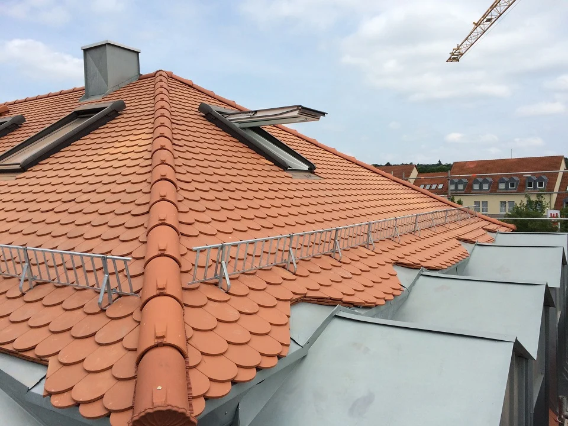

Amtsgericht Dinkelsbühl
Projekt ansehenDinkelsbühl / Ein Gebäude mit Geschichte.

WEHA / Familie Wegert / Dinkelsbühl
Von der ersten Idee bis zum letzten Dachziegel. Wir bringen Erfahrung, Sorgfalt und echtes Handwerk auf Ihr Gebäude.
Das Projektbuch
Echte Bauvorhaben. Echte Einblicke. Entdecken Sie, was unser Handwerk ausmacht.
Dinkelsbühl / Ein Gebäude mit Geschichte.

Zirndorf / Handwerk bis an den First.
Familienbetrieb. Seit 1994.
Es schützt, prägt und hält ein Gebäude zusammen. Genau so nehmen wir unsere Arbeit: persönlich, sorgfältig und mit Verantwortung.
Die Menschen hinter WEHAUnser Handwerk / Sechs Kapitel
01Dachziegel und Dachsteine prägen ein Gebäude. Wir unterstützen Sie bei einer passenden Eindeckung und stimmen die Umsetzung auf Ihr Vorhaben ab.
Leistung entdecken 02
02Flachdächer, Terrassen und Garagendächer stellen besondere Anforderungen an ihre Abdichtung. Wir kümmern uns um die fachgerechte Umsetzung.
Leistung entdecken 03
03Metallarbeiten ergänzen die Dachfläche und verbinden einzelne Bauteile. Sorgfalt an diesen Stellen ist ein wesentlicher Teil unserer Arbeit.
Leistung entdecken 04
04Wärmedämmung, Dachflächenfenster und Lichtkuppeln eröffnen neue Möglichkeiten. Wir betrachten Dachaufbau und Ausstattung gemeinsam.
Leistung entdecken 05
05Ein Dach braucht auch nach der Fertigstellung Aufmerksamkeit. Wir unterstützen Sie bei Reparaturen, Sanierungen, Reinigung und Wartung.
Leistung entdecken 06
06Eigener Kran und Gerüstbau unterstützen unsere Arbeit am Gebäude. Die erforderlichen Leistungen stimmen wir auf den Ablauf Ihres Vorhabens ab.
Leistung entdeckenPlanung, Beratung und Ausführung gehören zusammen. Zimmererarbeiten stimmen wir mit unserer langjährig verbundenen Zimmerei ab.

Hier sind wir zu Hause.
Bei WEHA sprechen Sie mit einem Familienbetrieb. Wir hören zu, beraten und besprechen die Arbeiten so, dass Ablauf und Kosten nachvollziehbar bleiben.
Lernen wir uns kennenDer nächste Schritt.
Neubau, Sanierung oder eine Frage zum Bestand – wir hören gerne von Ihnen.
Reden wir darüber 09851 / 5893666